Catacomb
Opening area. Clear side rooms, then defeat Cerberus for Double.
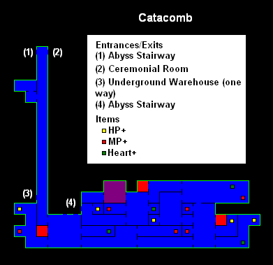
Castlevania
A GBA playing guide for Nathan Graves — relic order, boss path, and what to skip.
Follow bosses and relics. Optional wings of the castle are marked so you never feel lost.
StrategyWiki area maps — same room layout as the in-game SELECT map. Blue rooms are normal, red are saves, yellow are warps.
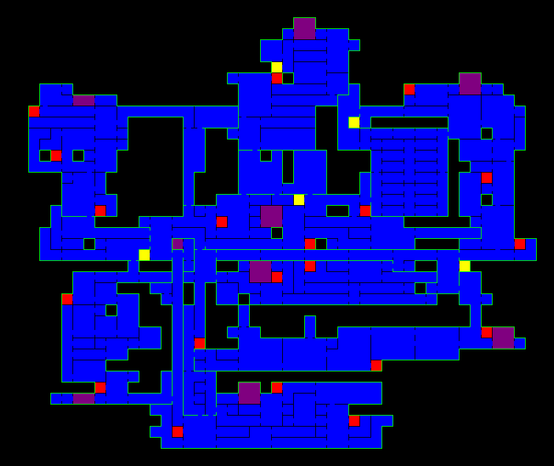
Opening area. Clear side rooms, then defeat Cerberus for Double.

Vertical climb from Catacomb up into the Audience Room approach.
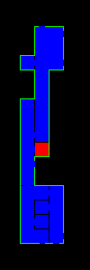
Castle hub. Necromancer here drops Tackle.
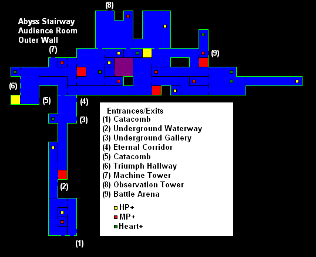
Connects Audience Room routes along the castle face.
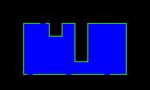
Link between Audience Room and Machine Tower.
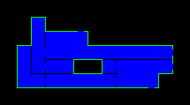
Vertical tower. Iron Golem drops Kick Boots.
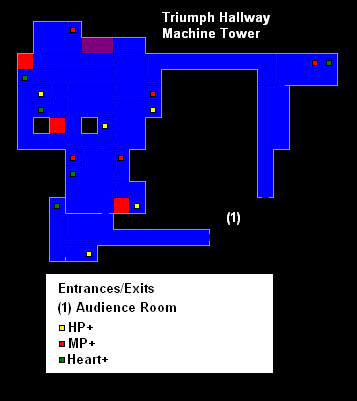
Approach corridor into Chapel Tower.
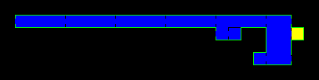
Adramelech fight. Clearing statues opens the lower castle.
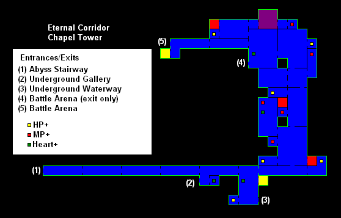
Dragon Zombie. Required before Warehouse or Battle Arena.
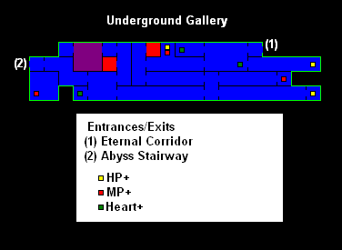
Death drops Heavy Ring and cleanses Waterway poison.
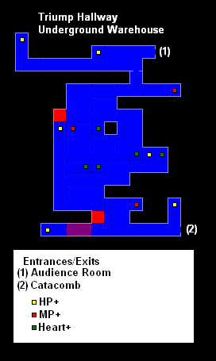
Camilla drops Roc Wing for late-game flight.
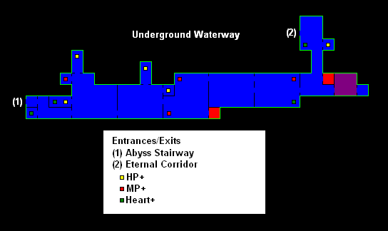
Hugh drops the Last Key to the Ceremonial Room.
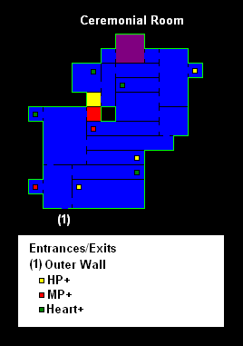
Seventeen-room trial. Needs Heavy Ring and Roc Wing.
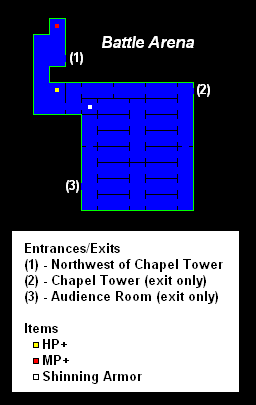
Final chamber — Dracula. Last Key required.
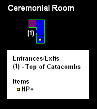
Maps from StrategyWiki (fan maps of in-game layouts). Also: VGMaps · Interactive map
Each stop ends at a boss. Afterward, loop back for power-ups your new relic unlocks.
Climb out of the opening pit, learn the whip and sub-weapons, and map the early side rooms. Defeat Cerberus for the Double relic (double jump).
Ascend Abyss Stairway, cross the Outer Wall and Triumph Hallway. Defeat Necromancer for Tackle (break heavy blocks).
Push through conveyor hazards and armored foes. Defeat Iron Golem for the Kick Boots (wall kick).
Cross Eternal Corridor and scale the chapel. Defeat Adramelech, then destroy the blocking statues that open the deeper castle.
Navigate flooded corridors (poison water unless you cleared Death). Defeat Camilla for the Roc Wing (flight / high jump).
Climb the tower, gather late DSS cards and gear, then defeat Hugh for the Last Key.
Use the Last Key, prepare DSS combos and healing, then defeat Dracula to finish Nathan’s story.
Required fights first; optional demons when you want power and XP.
Skip these on a first clear if you want a lean path — or take them for relics and XP.
Dragon Zombie. Required if you want Warehouse or Battle Arena. Strong XP and card hunting.
Death → Heavy Ring. Cleanses Waterway poison and unlocks heavy-object puzzles.
Seventeen-room trial. Needs Heavy Ring and Roc Wing. Repeatable challenge run.
Small habits that keep CotM’s difficulty fair.